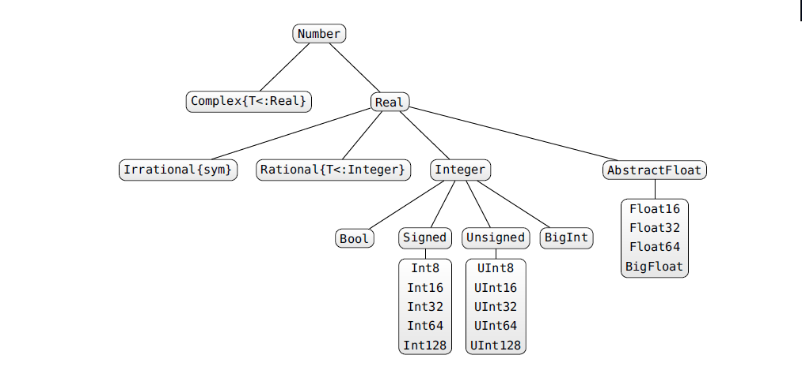
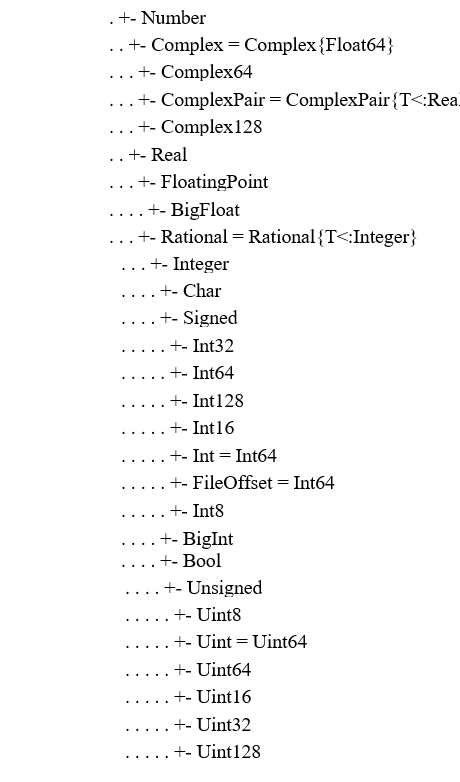
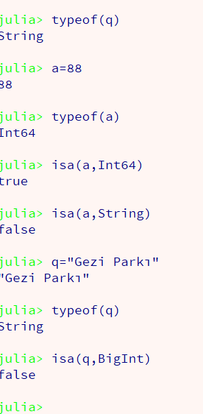
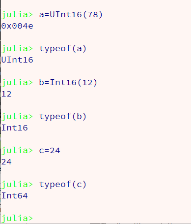
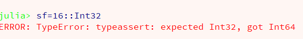

Julia Programlama Dili
Bölüm 2
Veri Tipleri Sistematiği
Sayfa 1
Julia programlama dilinde program yazılabilmesi için, çok gelişkin ve özel bir düzenleme olan Julia tip sistemi üzerinde bilgi sahibi olunması yararlı olur. Julia programlama dilinin öğrenimine tam buradan başlanması doğru olacaktır.
Julia çok gelişkin ve özgün bir tip hiyerarşisine sahiptir. Julia güçlü tip sistemli (Strogly Typed) bir programlama dilidir. Bunun anlamı her verinin bir tipi olması ve her işlemde tip uygunluğunun gözetilmesidir. İlginç ve önemli bir olgu, bu detaylı ve güçlü veri sisteminin uygulayıcıya hiç yük getirmemesidir. Julia programlama dilinde programcıların değişkenlere atadıları verilerin veri tiplerini belirtme zorunlukları yoktur. Fakat istediklerinde bu olanağa sahiptirler. Kullanıcı tarafından belirtilsin veya belirtilmesin, tüm verilerinin tiplerini algılama ve bu verilerin tiplerine uygun işlemlerin belirlenmesini Julia yorumlayıcısı üstlenir. Kullanıcılar, işlem yaptıkları verilerin tipilerini bilmek ve işlemlerini bu veri tiplerine uygun olarak tanımlamakla yükümlüdür.
İyi bir Julia programlayısı değişkenlerinin veri tiplerini tüm program boyunca izler ve ve her tanımladığı yöntemin uygulayacak verilerin tiplerine uygun olmasını gözetir. Aksi takdirde program uygunsuzluğun göründüğü anda çalışmasını durdurur yani çakılmış olur. Aslında, her programlama dilinde programlama yapılmasında da aynı duyarlıkların gözetilmesi gerekir.
Julia programlama dilinin, muazzam veri sistemi, başlı başına ancak tam bir web sayfasına sığabilmektedir. Bu sayfa incelendiğinde, Julia veri sistemin hem çok geniş, hem de alışkın olmayanlar için ilk bakışta kolay anlaşılabilir bir şema olmayabileceği görülebilir.
Bu kadar büyük bir tip sisteminde tanımlanan veri tiplerin tümünün normal programlarda uygulanması söz konusu değildir. Normal kullanıcılar sadece bu şemada bulunan veri siteminde tanımlanmış olan veri tiplerinden bazılarını uygulamalarında kullanmaktadırlar. Bu nedenle, aşağıda görüldüğü gibi sınırlı bir veri tipi sistemi incelemesinden başlanarak, gerek görüldükçe, genel sisteme dönülmesi daha uygun olabilir. Bu çalışmalar sırasında, genel şemanın açık kalması, genel şemaya yatkınlık sağlanması açısından yararlı olacaktır.

Julia Sayısal Tip Sisteminin Açıklaması Ref:Julia Express
Bogomil Kaminski (Polonya) tarafından yayınlanmış olan Julia Express el kitabı, tüm Julia programcılarının elinin altında olması gereken bir başvuru kitabı niteliğindedir. Bu kitapta yayınlanmış olan sayısal verilerin Julia tip sistemi yukarıda görülmektedir.
Julia tip sisteminin incelenmesinde, bazı tiplerin alt tipleri olduğuna, bazılarının da bir alt tipi olmadığını görebiliriz. Alt tipi olan veri tipleri "Soyut (Abstract) Tip" olarak adlandırılır. Soyut tipler örneklenemez, yani, bir gerçek verinin veri tipi olamazlar. Soyut sınıflar, tip sınıfı yani üst sınıf niteliğindedir ve programlarda bazı değişkenlere sadece belirli sınıfların alt sınıflarından olan değerlerin atanabilmelerini sağlamak amacı ile kullanılırlar. Sanal tiplerin en son alt tiplerinin, hiçbir alt tipi olamaz. Bu veri tipleri, "Gerçek Tipler " veya "Temel Tipler" olarak adlandırılır. Gerçek tipler örneklenebilir ve gerçek programlarda kullanılan veri tiplerini oluştururlar.
Genel şemaya bakılınca, tüm sınıfların atasının Any olarak adlandırılmış bir veri tipi olduğu görülür. Any, en üst ata, soyut tiptir. Julia programlarında, gerek kullanıcılar, gerekse Julia yorumlayıcısı, Any veri tipini sık sık kullanır. Örnek olarak, fonksiyon argümanlarının tipleri belirtilmezse, Julia yorumlayıcısı bunlara Any veri tipini atar. Any veri tipi, tüm verilerin atası olduğundan, tüm alt veriler bu veri tipinden sayılır. Böylece, sayısal argüman alması gereken bir fonksiyon, sözel veri tipinde bir değer ile de çağrılabilir. Doğal olarak bu durumda bir dışlama (hata) (exception) oluşabilir ve program yorumlayıcı tarafından sonlandırılabilir.
Julia programlama dilinin genel tip şeması, bu çalışma için tarafımızdan basitleştirilerek aşağıda sunulmuştur.

Sayısal verilerin tipleri, bu özet özet şemada daha net izlenebilmektedir.
Sayısal veri tipleri, <any<Number soyut sınıflarının alt sınıflarıdır. Bu alt sınıflar arasında en üst soyut sınıflar, Complex ve Real soyut sınflarıdır.
Complex soyut sınıfının, Complex64 ve Complex128 olarak iki alt örneklenebilir (gerçek) sınıfı bulunmaktadır.
Real soyut sınıfının, FloatingPoint ve Rational ve Integer olarak üç alt soyut sınıfı bulunmaktadır. Bu sınıflardan Rational sınıfının alt sınıfı bulunmadığından, aynı zamanda somut (öneklenebilir) (son) (terminal) sınıf olarak hareket etmektedir.
FloatingPoint soyut sınıfının, Float16, Float32, Float64, Float128 ve BigFloat somut (örneklenebilir) (uygulanabilir) sınıfları bulunmaktadır.
Integer soyut sınıfının, Char, Signed, Unsigned, Bool soyut alt sınıfları bulunmaktadır.
Char ve Bool BigInt veri tiplerinin alt tipleri olmadığından, kendileri aynı zamanda somut sınıf olarak örneklenebilir niteliktedirler.
Integer soyut sınıfının Signed soyut sınıfının, Int8, Int16, Int32, Int64 (=Int), Int128 olarak, somut (örneklenebilir) (uygulanabilir) sınıfları bulunmaktadır.
Integer soyut sınıfının Unsigned soyut sınıfının, Uint8, Uint16, Uint32, Uint64, Uint128 olarak somut (örneklenebilir) (uygulanabilir) sınıfları bulunmaktadır.
Sözel verilerin ata sınıfı "AbstractString"sınıfıdır. Bunun örneklenebilir alt sınıfı ise, "String" sınıfıdır. Genel tip şemasına bakınız.
Sayısal veriler kullanan tipler sadece, Number sınıfının alt sınıfları değildir. Julia Programlama dilinin Genel tip şemasına bakıldığında, diziler (Arrays), topluluklar (Tuples), kümeler (Sets) gibi koleksiyon tiplerinin de sayısal veriler kullandığı görülür.
Bu çok geniş veri sisteminin veri sınıfları, ileriki sayfalarda incelenerek, Julia programlarında uygulanmaları üzerinde bilgi edinmeye çalışacağız.
Julia programlama dilinde, kullanıcıların çalıştıkları verilerin veri tiplerini bilmeleri gereklidir. Bir verinin sınıfı typeof(değişken) öntanımlı fonksiyonu ile sorgulanabilir. Belirli bir değişkenin, belirli bir veri tipinden olup olmadığı ise, isa(değişken, veri tipi) öntanımlı fonksiyonu yardımı ile belirlenebilir.

Julia programlama dilinde, programcıların verilerinin tiplerini, sanal veya gerçek, geçerli veri tipleri ile belirleme olanakları vardır. Julia yorumlayıcısı, belirtilen veri tiplerini analiz eder ve önerilen veri tipini, programdaki durumuna ve çalışılan makinenin yeteneklerine göre, geçerli bir gerçek veri tipine uyarlar. Bu işlemlerin az veya çok sıradışı olduğu, verilerin değişkenlere atanmalarında, programcıların veri tiplerini genellikle belirtmediklerini yineleyelim. Bu kolaylık, Julia programlama dilinin kullanım kolaylığının en önemli bir göstergesidir. Fakat bu sadece bir kullanım kolaylığıdır. Aslında, Julia yorumlayıcısı, güçlü tip değerlendirme yeteneğinin gereği olarak, her atanan değerin veri tipini atama sırasında belirler ve tanımlanan her işlemin bu veri tipinin yeteneklerine uygun olup olmadığını denetler. İşleme girecek verilerin tiplerinin desteklemediği işlemler önerilirse, Julia yorumlayıcısı işlemi reddeder ve programın çalışmasını durdurur. Bunun engellenebilmesi için, Julia programcılarının (aslında her program dilinde olduğu gibi) çalıştıkları verilerin tiplerini izlemeleri ve bu veri tipleri le uygulanamayacak işlemleri önermemeleri gerekir.
Julia programlama dilinde, veri tipi atama istemleri veri tipi belirtilmesinden sonra verinin parantez içinde belirtilmesi ile yapılır. Aşağıda, bu yöntem görülmektedir:

Yukarıdaki işlemlere baklınca, atama sırasında tip zorlamasının ne kadar saçma bir olay olduğu görülür. Belki, çok küçük sayılar atanacağı bilinen veriler için, Int16 seçimi, programın kullanacağı stack bellek açısından ekonomi sağlayabilecektir. Ama, bu kazanç olsa olsa programın sarfettiği bellek yanında pek az bir değer taşıyacaktır. Julia programlama dilinde, atamalarda değer gözetmek hiç gerekli değildir. En son işlemde hiçbir veri tipi belirtilmemiş, Julia yorumlayıcısı, atanan değere Int64 tipini vermiştir. En doğru yol budur. Hiçbir şeyi fazla kurcalamamak gerekir. Özellikle başlangıçta işler biraz Julia yorumlayıcısına bırakılmalıdır.
Veri tipi belirtmenin en gerekli olabileceği işlemler, fonksiyon argümanlarının alabileceği tiplerin sınırlanmasıdır. Bunu fonksiyonları incelerken göreceğiz.
Julia programlama dilinde, veri tipi belirtilmesi, çift kolon işlemcisi (::) ile yapılır. Aşağıda programcının bir değişkene atanmış bir verinin, veri tipinin belirli bir veri tipi olduğunu ileri sürmesi ve bu savın, Julia yorumlayıcısı tarafından nasıl değerlendirildiği görülmektedir.

Julia yorumlayıcısı, ileri sürülen veri tipi savının yanlış olduğunu, beklentinin Int32 veri tipi olmasına karşın gerçekleşen veri tipinin Int64 olduğunu belirtmiştir.
Bu sonuçtan, Julia yorumlayıcısının atamalarda, atanacak veriyi incelediği, bu veriye uygulanabilecek veri tipini, makinenin mimarisine göre belirlediği görülmektedir. Buradan 64 bitlik işletim sistemi kullanan makinelerde, uygulanabilecek en düşük tamsayı veri tipinin, julia yorumlayıcısı tarafından, Int64 olarak uygulanacağı anlaşılmaktadır. Bu tür seçimlerde, julia yorumlayıcısını özgür bırakmak gerekir.
Bu bilgiler gözönüne alındığında, bir programcının, atadığı değerlerin veri tiplerini program boyunca izlemesi ve veri tiplerine uygun olmayan işlemler önermemesi gerektiği görülebilir. Her zaman, "Ben makine olsaydım ne yapardım ?" diye sorulması gerekir. Fakat bu, aşağı yukarı her programlama dilinde uygulanması gereken bir yöntemdir.
Veri tiplerinin kullanımına, örnek programlar ile çalışmaya devam ettikçe daha fazla yakınlık sağlayacağız.
Başlangıç olarak en çok uygulanan veri tiplerini tanıtmaya çalışacağız.
Created With Microsoft Expression Web 4